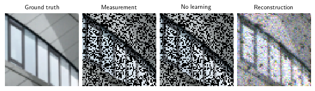

%cd ..Sample notebook
Use this notebook for local experiments. See scripts/train.py for Weights & Biases integration.
from munch import DefaultMunch
import wandb
import numpy as np
import torch
import deepinv as dinv
from utils import *config = DefaultMunch(
epochs=10,
batch_size=1,
lr_init=1e-3,
seed=0,
)
torch.manual_seed(config.seed)
np.random.seed(config.seed)
generator = torch.Generator().manual_seed(config.seed)
device = dinv.utils.get_freer_gpu() if torch.cuda.is_available() else "cpu"Define physics
physics = define_physics(config, device=device, generator=generator)Prepare dataloaders
train_dataloader, test_dataloader = define_data(config, physics=physics, generator=generator)Dataset has been saved in Urban100Define model
model = define_model(config.model, device=device)Define loss
loss, model = define_loss(config, model=model, device=device)
metrics = define_metrics(config)Define trainer and train model
Note you can load a pretrained model using model = load_model(model, model_dir, ckpt_id, device=device)
optimizer, scheduler = define_optimizer_scheduler(model, config)
trainer = dinv.training.Trainer(
model = model,
physics = physics,
optimizer = optimizer,
train_dataloader = train_dataloader,
eval_dataloader = test_dataloader,
epochs = config.epochs,
losses = loss,
scheduler = None,
metrics = metrics,
online_measurements = False,
ckp_interval = 1000,
device = device,
eval_interval = 1,
save_path = None,
plot_images = False,
wandb_vis = False,
)
trainer.train()The model has 443 trainable parametersTrain epoch 1/10: 100%|██████████████████████████████████████████████████████████████████| 80/80 [00:00<00:00, 137.42it/s, TotalLoss=0.171, PSNR=8.66]
Eval epoch 1/10: 100%|████████████████████████████████████████████████████████████████████████████████████| 20/20 [00:00<00:00, 226.00it/s, PSNR=11.5]
Train epoch 2/10: 100%|███████████████████████████████████████████████████████████████████| 80/80 [00:00<00:00, 146.47it/s, TotalLoss=0.0731, PSNR=12]
Eval epoch 2/10: 100%|████████████████████████████████████████████████████████████████████████████████████| 20/20 [00:00<00:00, 250.77it/s, PSNR=13.9]
Train epoch 3/10: 100%|██████████████████████████████████████████████████████████████████| 80/80 [00:00<00:00, 144.97it/s, TotalLoss=0.046, PSNR=13.9]
Eval epoch 3/10: 100%|████████████████████████████████████████████████████████████████████████████████████| 20/20 [00:00<00:00, 305.43it/s, PSNR=15.4]
Train epoch 4/10: 100%|█████████████████████████████████████████████████████████████████| 80/80 [00:00<00:00, 145.92it/s, TotalLoss=0.0337, PSNR=15.3]
Eval epoch 4/10: 100%|████████████████████████████████████████████████████████████████████████████████████| 20/20 [00:00<00:00, 250.73it/s, PSNR=16.5]
Train epoch 5/10: 100%|█████████████████████████████████████████████████████████████████| 80/80 [00:00<00:00, 141.59it/s, TotalLoss=0.0267, PSNR=16.3]
Eval epoch 5/10: 100%|████████████████████████████████████████████████████████████████████████████████████| 20/20 [00:00<00:00, 290.26it/s, PSNR=17.3]
Train epoch 6/10: 100%|███████████████████████████████████████████████████████████████████| 80/80 [00:00<00:00, 145.85it/s, TotalLoss=0.0224, PSNR=17]
Eval epoch 6/10: 100%|██████████████████████████████████████████████████████████████████████████████████████| 20/20 [00:00<00:00, 232.85it/s, PSNR=18]
Train epoch 7/10: 100%|█████████████████████████████████████████████████████████████████| 80/80 [00:00<00:00, 150.39it/s, TotalLoss=0.0194, PSNR=17.6]
Eval epoch 7/10: 100%|████████████████████████████████████████████████████████████████████████████████████| 20/20 [00:00<00:00, 260.66it/s, PSNR=18.5]
Train epoch 8/10: 100%|█████████████████████████████████████████████████████████████████| 80/80 [00:00<00:00, 135.47it/s, TotalLoss=0.0172, PSNR=18.2]
Eval epoch 8/10: 100%|██████████████████████████████████████████████████████████████████████████████████████| 20/20 [00:00<00:00, 284.22it/s, PSNR=19]
Train epoch 9/10: 100%|█████████████████████████████████████████████████████████████████| 80/80 [00:00<00:00, 133.29it/s, TotalLoss=0.0156, PSNR=18.6]
Eval epoch 9/10: 100%|████████████████████████████████████████████████████████████████████████████████████| 20/20 [00:00<00:00, 241.52it/s, PSNR=19.4]
Train epoch 10/10: 100%|██████████████████████████████████████████████████████████████████| 80/80 [00:00<00:00, 137.52it/s, TotalLoss=0.0144, PSNR=19]
Eval epoch 10/10: 100%|███████████████████████████████████████████████████████████████████████████████████| 20/20 [00:00<00:00, 248.78it/s, PSNR=19.7]DnCNN(
(in_conv): Conv2d(3, 8, kernel_size=(3, 3), stride=(1, 1), padding=(1, 1))
(conv_list): ModuleList()
(out_conv): Conv2d(8, 3, kernel_size=(3, 3), stride=(1, 1), padding=(1, 1))
(nl_list): ModuleList(
(0): ReLU()
)
)Plot results
trainer.plot_images = True
trainer.test(test_dataloader)Test: 0%| | 0/20 [00:00<?, ?it/s, PSNR=19.7, PSNR no learning=11.1]Test: 100%|█████████████████████████████████████████████████████████████████████████| 20/20 [00:00<00:00, 63.56it/s, PSNR=19.7, PSNR no learning=11.1]
Test results:
PSNR no learning: 11.100 +- 2.250
PSNR: 19.696 +- 2.488{'PSNR no learning': 11.10047914981842,
'PSNR no learning_std': 2.2499061065290054,
'PSNR': 19.696006774902344,
'PSNR_std': 2.48835083477134}